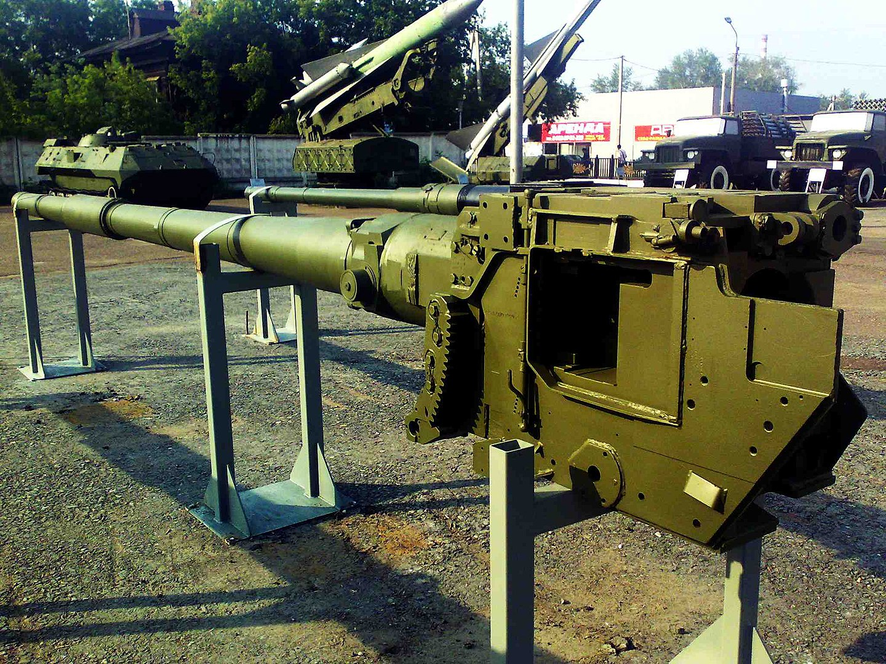

Т-84
український основний бойовий танк, створений у 1990-х роках на основі Т-80УД. Розробку танка здійснювало ХКБМ, розробку двигуна — ХКБД, а виробництвом займався Завод імені Малишева. Розробка танка тривала з 1993 року, 2000 року його прийняли на озброєння ЗСУ. Втім, через брак коштів виготовили всього 10 одиниць: із них 4 невдовзі продали до США, а решту пізніше поставили на зберігання. Танки знову надійшли до підрозділів 2018 року та взяли участь у бойових діях повномасштабного російського вторгнення, яке триває з 2022 року. Танк також брав участь у низці експортних тендерів, однак не переміг у жодному. Т-84 зберіг типові риси радянської школи танкобудування: невеликі маса та розміри завдяки механізму заряджання, 125-мм гладкоствольна гармата / пускова установка й динамічний захист. Однак отримав і низку покращень у порівнянні з Т-80УД: низка російських складників замінені на українські, танк має зварно-катану башту, двигун 6ТД-2 потужністю 1200 к.с. з сучасною трансмісією, динамічний захист «Ніж», комплекс оптико-електронного придушення «Варта», допоміжну силову установку, прицільні засоби.
.jpg)
Історія
Т-84 є прямим розвитком радянського танка Т-80УД, який був розроблений у Харківському конструкторському бюро машинобудування (ХКБМ) і виготовлявся на заводі імені Малишева. Т-80УД, прийнятий на озброєння в 1987 році, став результатом довгих дискусій всередині СРСР. Одні представники керівництва на чолі з міністром оборони Дмитром Устиновим наполягали на уніфікації танкової техніки з використанням газотурбінних двигунів у Т-80У на всіх заводах. Однак ХКБМ пропонував альтернативний варіант на основі власних розробок із новим дизельним двигуном 6ТД. Цей двигун мав майже аналогічні ходові характеристики, як і газотурбінний, але був значно економічніший. Серійне виробництво У серію на заводі імені Малишева пішов компромісний Т-80УД, оснащений харківським дизельним двигуном 6ТД-1 потужністю 1000 к.с. і вдосконаленим озброєнням, яке включало сучасні системи бронювання та озброєння, що були засновані на дослідницькій моделі «Об'єкт 476». Виробництво танка тривало до розпаду СРСР і частково продовжилося в перші роки незалежності України, хоча сам танк використовувався переважно для експорту, а не для внутрішніх потреб. Розвиток Т-84 У 1990-х, вже в незалежній Україні, танкова промисловість зіткнулася з труднощами через фінансові проблеми та залежність від комплектуючих із Росії. Українські конструктори під керівництвом Михайла Борисюка розробили модернізований варіант Т-84, який мав максимально замкнутий цикл виробництва всередині України. Перші зразки були готові вже в 1994 році. У 1999 році Т-84 був прийнятий на озброєння Збройних сил України під назвою БМ «Оплот».
Подальші розробки Для експорту в Туреччину було створено модифікацію Т-84-120 з 120-мм гарматою, а пізніше був розроблений «Оплот-М» — найбільш сучасна версія танка з низкою новітніх технологій. «Оплот-М» був прийнятий на озброєння Збройних сил України в 2009 році.
Танк Т-84 має стандартне для радянських танків компонування: відділення керування розташоване в передній частині, бойове відділення — в середній з командиром і навідником у башті, а моторно-трансмісійне відділення — у задній частині. Екіпаж складається з трьох осіб: механіка-водія, навідника та командира.
Захист Танк має комбіновану броню, динамічний та активний захист.
Пасивний захист Т-84 оснащено новою зварно-катаною баштою, що підвищує її міцність. Лобова броня башти складається зі сталевих листів і комірчастого наповнювача, а також має модульну конструкцію з можливістю заміни пошкоджених панелей. Дах башти цільноштампований. Корпус захищений багатошаровою бронею, а борти оснащені гумовими екранами. Протирадіаційний захист забезпечується полімером з додаванням літію, бору та свинцю.
Динамічний та активний захист На танк встановлено вбудований динамічний захист «Ніж», який ефективніший за попередні системи, такі як «Контакт-5». Для оптико-електронного придушення використовується система «Варта», яка реагує на лазерне опромінення танка, створюючи хибні сигнали або димові завіси для захисту.
Озброєння Танк оснащено 125-мм гладкоствольною гарматою КБА-3 з автоматом заряджання. Вона може використовувати підкаліберні, кумулятивні, уламково-фугасні снаряди та керовані ракети «Комбат». Боєкомплект складається з 40 пострілів. Допоміжне озброєння включає кулемети КТ-7,62 і КТ-12,7 у зенітній установці.
Система керування вогнем Система включає денний приціл 1Г46М, нічний приціл ТО1-КО1ER, балістичний обчислювач і стабілізатори. Командир може взяти контроль над гарматою і кулеметом для самостійного ведення вогню. Обчислювач автоматично враховує різні балістичні поправки, а також використовує систему врахування вигину каналу ствола.
Силова установка Основним двигуном є багатопаливний дизель 6ТД-2 потужністю 1200 к.с., що дозволяє розвивати швидкість до 72 км/год. Танк має внутрішні та зовнішні баки загальною місткістю до 1640 літрів пального, що забезпечує запас ходу 400 км, який можна збільшити до 600 км з додатковими баками.
Ходова частина Танк оснащено торсіонною підвіскою з гідроамортизаторами, характерними для родини Т-80. Гусениці можуть мати полімерні асфальтохідні накладки для зменшення зносу на дорогах.
Інше обладнання Механік-водій має перископічні прилади спостереження і нічного бачення. Танк оснащено системою колективного захисту від зброї масового ураження, швидкодійною системою пожежогасіння та обладнанням для підводного водіння. Для зниження помітності використовується маскувальна накидка «Контраст», а також пускові установки для димових або аерозольних гранат.
Модифікації
З огляду на відсутність чіткої межі між Т-80УД й Т-84 та різні погляди в джерелах, нижче наведено об'єкти, що часто фігурують як прототипи Т-84. Об'єкт 478Д — дослідний зразок з КОЕП «Штора», пасивним нічним прицілом ТПН-4 «Буран-Е» та системою дистанційного підриву уламково-фугасних снарядів «Айнет». Двигун — 1200-сильний 6ТД-2, шасі частково запозичене в Т-64. Об'єкт 478ДУ — дослідний зразок з 1000-сильним 6ТД-1 та ходовою зразка Т-64. Цей танк 1993 було привезено для демонстрації в Пакистан. Об'єкт 478ДУ1 — дослідний зразок з 1000-сильним 6ТД-1 та ходовою зразка Т-80. Цей танк 1993 було привезено для демонстрації в Пакистан. Об'єкт 478ДУ2 — дослідний зразок зі зварно-катаною баштою, 6ТД-2 та «Шторою». Об'єкт 478ДУ3 — зарезервоване найменування, прототип не створено. Об'єкт 478ДУ4 — дослідний зразок з покращеною трансмісією, що мала 7 передач переднього ходу та 3 заднього. Це збільшувало швидкість уперед з 60 до 73 та назад до 32 км/год. Об'єкт 478ДУ5 — дослідний зразок з кондиціонером потужністю 4 кВт, розміщеним у боксі на кормовій частині башти, туди також перемістили частину боєкомплекту. На цьому зразку також випробували автоматичну трансмісію, систему керування зі штурвалом замість традиційних важелів керування та автоматизацію запуску двигуна з цифровими індикаторами показників роботи двигуна. Об'єкт 478ДУ6 — зарезервоване найменування, прототип не створено. Об'єкт 478ДУ7 — дослідний зразок для малайзійського тендера. Об'єкт 478ДУ8 — дослідний зразок.
Т-84У «Оплот» («Об'єкт 478ДУ9», в інших джерелах «Об'єкт 478ДМ») — серійний танк, прийнятий на озброєння 2000 року. Вперше показаний на IDEX-1999 під назвою «T-84M», а його допрацьований варіант — на IDEX-2001.[12] Відомий під назвами Т-84, Т-84У, Оплот, БМ «Оплот» зразка 1999 року.
Т-84-120 «Ятаган» («Об'єкт 478Н») — дослідна модифікація Т-84 зі 120-мм гарматою та автоматом заряджання в баштовій ніші.
БМ «Оплот» або «Оплот-М» («Об'єкт 478ДУ9-1» або «Об'єкт 478ДУ10») — розвиток танка Т-84У «Оплот» з покращеними характеристиками захисту та вогневої потужності. Візуально відрізняється за значно зміненою формою башти, бортовими екранами та панорамним приладом спостереження командира.